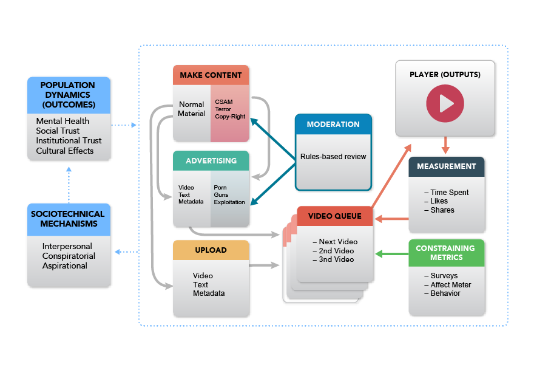
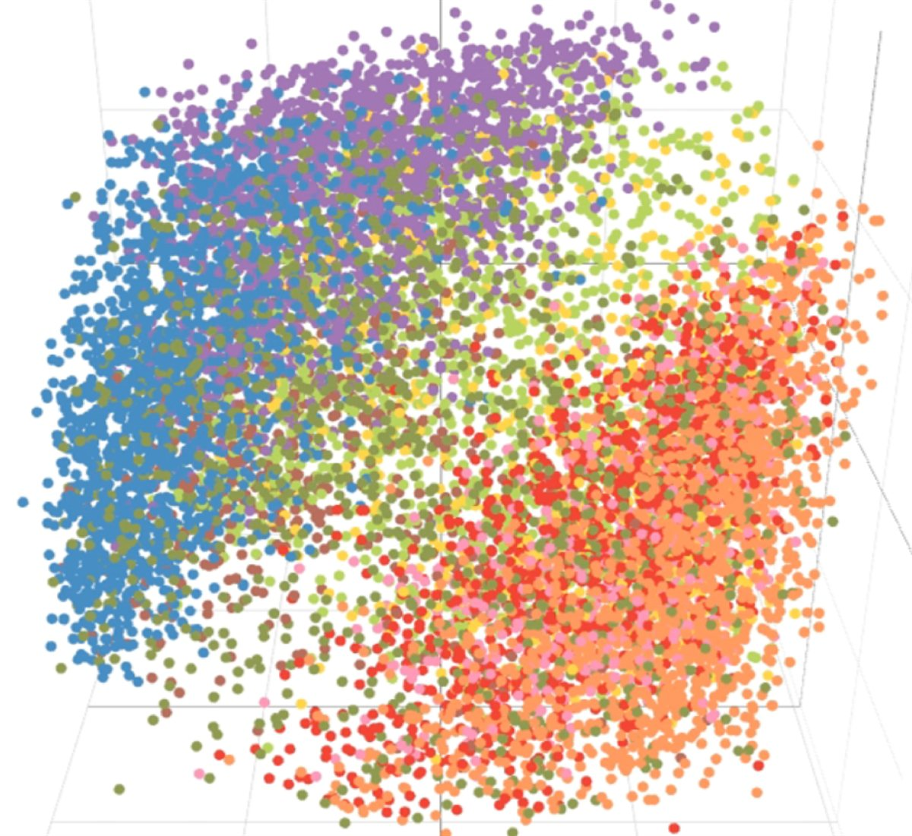
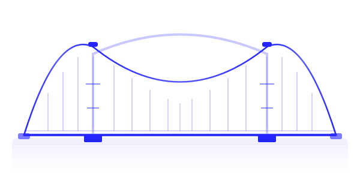
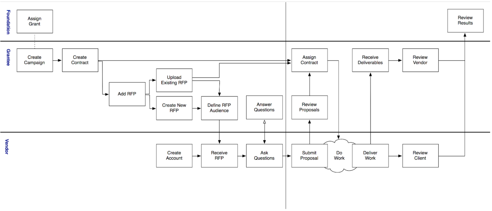
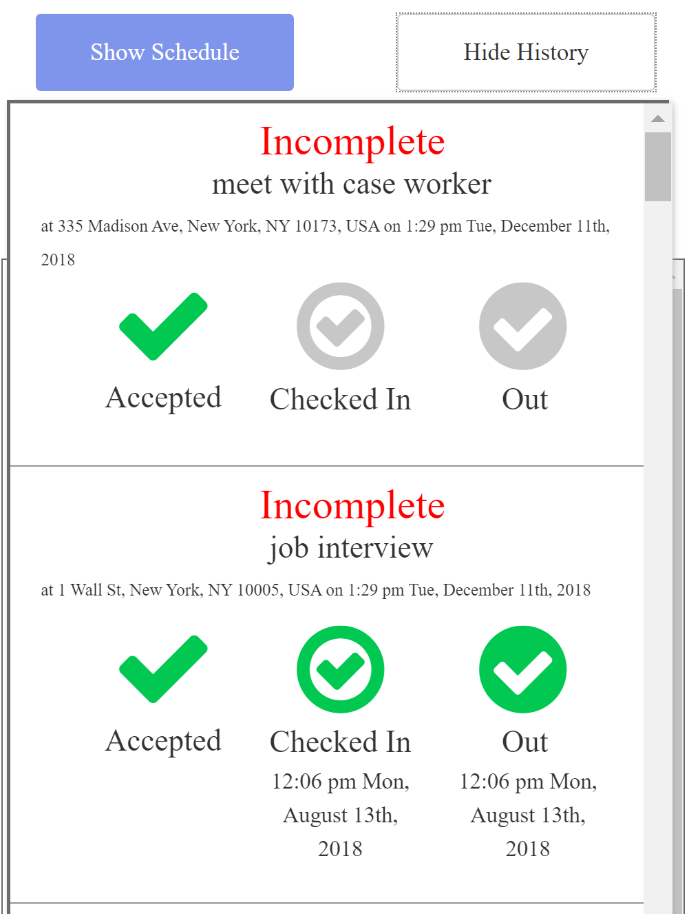
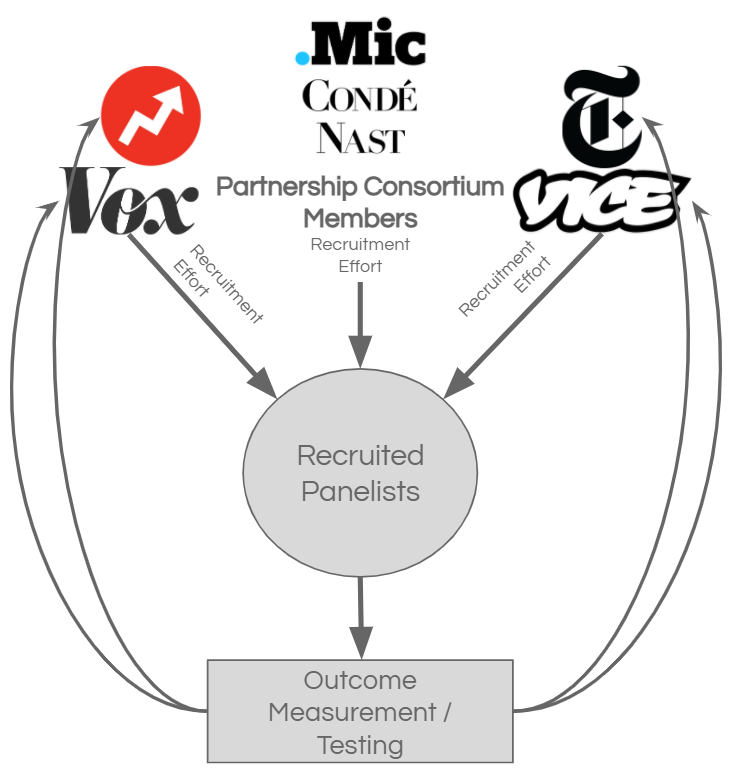

Research Projects
Research
Nathaniel was an inaugural Fellow of the Rebooting Social Media Institute at the Berkman Klein Center at Harvard. His work focused on assessing parallels between public health and technology development, and mechanism design for fostering more pro-social outcomes from exposure to online content.

Launched in June of 2023, Nathaniel (with collaborator Tom Gilbert) posted Accountability Infrastructure: How to implement limits on platform optimization to protect population health, a white paper differentiating between what we called “acute” and “structural” harms, and arguing for methods suitable to addressing structural harms by leveraging randomized controlled trials.
See: platformaccountability.com, We need a germ theory for the Internet, The Atlantic, June 2023, and How to Assess Platform Impacts on Mental Health and Civic Norms, Tech Policy Press, June 2023.
Nathaniel created a framework for regulation of technology platforms, oriented around outcome-based or consequentialist structures, rather than the rules-based formats that are currently standard. A second focus area investigated reductions of social trust in society and opportunities to use digital tools to overcome those challenges.
See: Social media is polluting society. Moderation alone won’t fix the problem, MIT Technology Review, August 2022.
Combating Systemic Misinformation
Nathaniel has participated in, and led, several projects designed to combat systemic challenges in misinformation in online communities, especially on Facebook and YouTube. These projects have sourced extensive new data and resulted in major news stories. Details about many of these projects are not currently public.
See: Facebook has a Superuser-Supremacy Problem, The Atlantic, February 2022.

Launched in 2017, the Peoria Project was an ambitious multi-million dollar effort to examine Americans’ core beliefs across the full political spectrum. That work led to a new view of the public, clustered into nine segments reflecting people’s values rather than their demographics or voting behaviors. To deepen our understanding of these audiences, the project worked with a broad range of collaborators to produce, distribute, and test messages with robust statistical methods to tease out which qualities of content best resonated with different segments. The result was a more robust way to visualize the contours of American society, and new methods to reach people.
Concept Work

In 2025, Nathaniel and his colleagues at the Better Internet Initiative delved into a formal exploration of the challenges faced by independent media, especially independent creators on social media, journalists, and in independent film. The project, which involved structured interviews with both potential users and existing social innovations, in addition to legal and financial research, led to several models for back office support via pooled research. The model is currently in active exploration, with more information available at gocauseway.com.
In 2023, Nathaniel launched an independent media experiment intended to explore what a different type of truly social media might feel like. To that end, he created a challenge to create private, self-defined community via email, intended to foster deeper connection through a different type of regular, ritualized communication. The project culminated with private interviews with nearly 50 participants in the experiment and the publication of a public challenge for others to repeat the experiment.
Communications Marketplace
In 2017, the Ford Foundation, with another consultant, enlisted Nathaniel to help solve a long-standing, complex problem encountered by foundations: How might foundations build infrastructure that supports efficient communications, marketing and research among and between grantees? Nathaniel led a team in developing a robust product design process that facilitated grantee story tracking, financial modeling and an in-depth roadmapping plan for features. The plan received widespread positive feedback from top stakeholders across multiple foundations, and while Ford ultimately pursued a smaller scale solution, the product map continues to garner interest as a full-scale solution that would help foundations and nonprofits source vendors more efficiently, open access to overlooked service providers, streamline funder reporting, and, most importantly, facilitate the sharing of research and learning among peer organizations.
The work responded to a fact pattern witnessed in the field:
- Nonprofits have limited access to a diverse community of high-quality research, content, data and digital providers with valuable talents and skills.
- Lack of transparency and limited information-sharing leads to duplicated efforts, wasted resources, and missed opportunities.
- Siloed research and campaigns prevent achieving economies of scale, limiting the potential impact of more coordinated efforts.
Our response was an intermediated marketplace, with portals for funders, non-profits, and vendors.

Project Iter
In 2018, Nathaniel participated in a product research effort, in consultation with Human Ventures, to look at ways of improving the verification of physical in-person check-in. A project of interest for a range of use cases (private, public, non-profit), the initiative was motivated by the need for improved methods of data collection for vulnerable populations, especially the homeless, that build in data protections.

The system was designed to require dual confirmations from both service providers and users, a form of multi-stakeholder validation. This validation was supplemented by optional features which could be deployed using off-the-shelf technology, such as timebound geofencing, augmented in-person verification with tools like QR codes, a GPS heartbeat, or even biometric signatures.
We ultimately concluded that the social impact lens of the product was not possible via an independent outside organization, but instead would have needed to be pursued from within a trusted authority, likely the government or a highly respected non-profit backed by a data trust. Research and interview data are available.
Media Measurement
In 2017, Nathaniel led a group, under the auspices of Harmony Labs, exploring a range of options for improving measurement for news and media. One output of this project was Survey 160, the company designed to improve data acquisition for surveys using SMS. Several other products were also scoped in this project, including an ambitious consortium model designed to help large, but struggling media properties coordinate efforts to build a shared research panel using an integrated product design. The system apportioned value to members of the consortium based on their contributions to the pooled network, with options to purchase additional access once involved.

While the fragmented landscape of that struggling community of publishers prevented the launch of the project, the increased reliance in the years since on research panels has validated the core insight of the product. There is good reason to think such a model would still be particularly useful to these networks, particularly in light of monetization challenges spawned by social media networks.